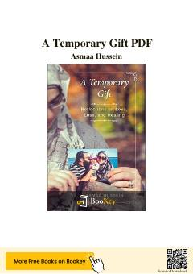

ATYo'qotish va qayg'u davrida iymon hamda sabr orqali tasalli topish haqidagi ta'sirli xotira.
Asmaa Hussein o'zining turmush o'rtog'ini yo'qotgandan keyingi qayg'uli va ta'sirli hayotiy tajribasini bayon etadi. Kitob insonning og'ir yo'qotishlar qarshisida iymon va sabr orqali qanday qilib kuch topishi hamda hayotning o'tkinchiligini anglab yetishi haqida hikoya qiladi.